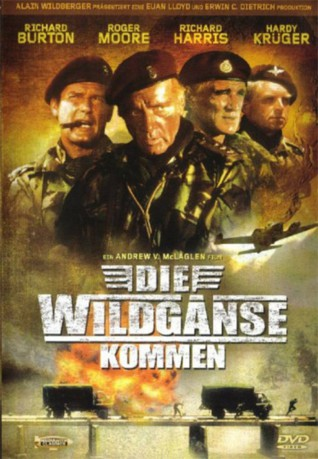

IMDB-Wertung: 6.8 / 10
IMDB-Wertung: 6.8 / 10  Metascore:
Metascore: 
Die Wildgänse, eine Privatarmee und Söldnertruppe für Himmelfahrtskomandos. Sollen einen Diplomaten in Afrika aus den Händen von Rebellen befreien. Ihre Chance das lebend zu überstehen ist eins zu hundert.
Alternativ: The Wild Geese
 IMDB-Wertung: 6.8 / 10 Metascore:
Die Wildgänse, eine Privatarmee und Söldnertruppe für Himmelfahrtskomandos. Sollen einen Diplomaten in Afrika aus den Händen von Rebellen befreien. Ihre Chance das lebend zu überstehen ist eins zu hundert.
Jahr: 1978
Dauer: 134 Minuten
FSK: 16
Land: England Studio: Ascot FilmverleihTonspuren:
Untertitel:
Auflösung: 1080p (1920x1032) Größe: 13004 MB
Genre: Action, Thriller, Drama, Abenteuer, Krieg
Regisseur: Andrew V. McLaglen
Drehbuch: Reginald Rose, Daniel Carney
Soundtrack: Roy Budd
Darsteller:
 Richard Burton als Colonel Allen Faulkner
Richard Burton als Colonel Allen Faulkner Roger Moore als Lt. Shawn Fynn
Roger Moore als Lt. Shawn Fynn Richard Harris als Capt. Rafer Janders
Richard Harris als Capt. Rafer Janders Hardy Krüger als Lt. Pieter Coetzee
Hardy Krüger als Lt. Pieter Coetzee Stewart Granger als Sir Edward Matherson
Stewart Granger als Sir Edward Matherson John Kani als Sgt. Jesse Link
John Kani als Sgt. Jesse Link Frank Finlay als Father Geoghagen
Frank Finlay als Father Geoghagen Jeff Corey als Mr. Martin
Jeff Corey als Mr. Martin Percy Herbert als Keith
Percy Herbert als Keith Jack Watson als R.S.M. Sandy Young
Jack Watson als R.S.M. Sandy Young Patrick Allen als Rushton
Patrick Allen als Rushton Joe Cole als Derek
Joe Cole als Derek Terence Longdon als Anonymous Man
Terence Longdon als Anonymous Man Valerie Leon als 1st Girl Dealer
Valerie Leon als 1st Girl Dealer Graham Clarke als Gennaro , uncredited
Graham Clarke als Gennaro , uncreditedDatei: X:\1978\Wildgänse kommen, Die (1978, FSK16, 1920x1032).mkv seit 09.07.2015
Festplatte: HD 1971-1979
 Es gibt insgesamt 31 Filme in der Gruppe '1978'
Es gibt insgesamt 31 Filme in der Gruppe '1978'